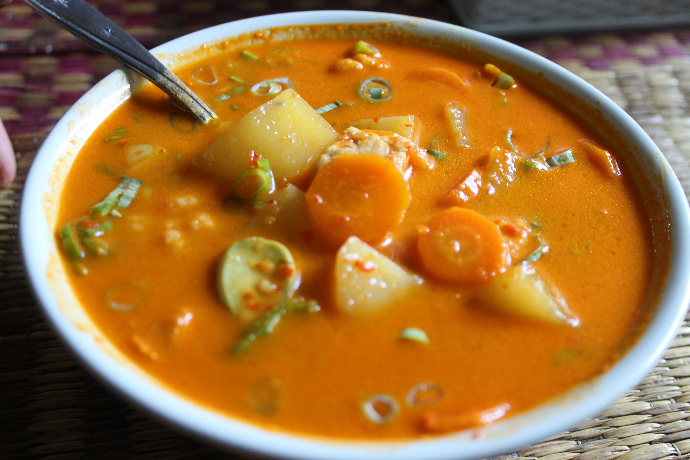

Bite Into South Tangerang
Sayur Besan
A traditional Betawi dish native to South Tangerang featuring a unique yellow coconut milk soup made with terubuk (sugarcane flower) as its main ingredient, traditionally served at formal wedding ceremonies.

Laksa Tangerang Selatan
A rice noodle dish served in a rich, spiced yellow coconut broth, uniquely topped with boiled mung beans, toasted grated coconut, and free-range chicken.